3.3 录音分析模块¶
一、工作流介绍¶
功能：接收学生面试时的录音，并分析面试表现。

具体步骤如下：
- 输入：面试语音（Mp3、Wav等格式，不支持m4m）
- 执行流程：
- 面试语音转文字：基于ASR技术将面试对话语音转为文字，为追求效果，我们这里选择使用大模型ASR插件
- 角色划分和概要提取：基于面试语音转完的文字，通过大模型拆分面试官和应试者的角色部分，并将自我介绍部分以及面试提问的问题和面试者的回答进行拆分和提取，并总结面试问题粗略的分布。同时也判断如果不是面试对话录音，则进行拦截。
- 面试表现评估：分别对自我介绍、面试提问的问题和面试者的回答进行评估。 面试题回答情况基于面试宝典+互联网答案综合判断，同时把面试题记录在数据库中，以便后续建设新的面试题库。
- 报告内容生成：结合总结面试问题粗略的分布、自我介绍评估、面试问题回答评估的结果，拼接面试题文字原文，生成最终的报告。
- 输出：面试结果概要、面试表现评估、面试对话原文
二、实现面试语音转文字¶
流程如下：
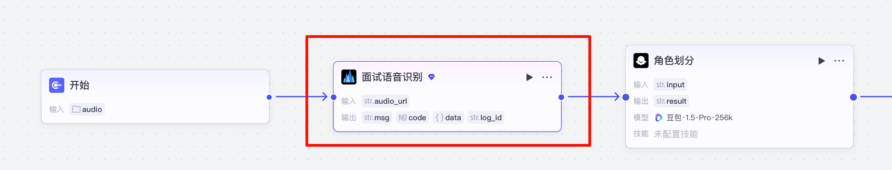
在前面的章节中，我们已经学习过了ASR是什么，这里我们使用coze自带的语音识别插件实现语音转文字，选择“大模型版本”，需要注意：
-
为了保证识别效果，我们这里选择使用参数量更大的大模型。能够基于上下文等信息获取优的效果。
-
因为使用的是大模型，以及面试录音时长较长，通常需要处理3min以上，这里我们需要把超时时间调到600秒的最大值。
-
audio_url需要接收的是str的链接字符串，我们输入的部分是Audio。这里也和图片类似，自动做了类型兼容
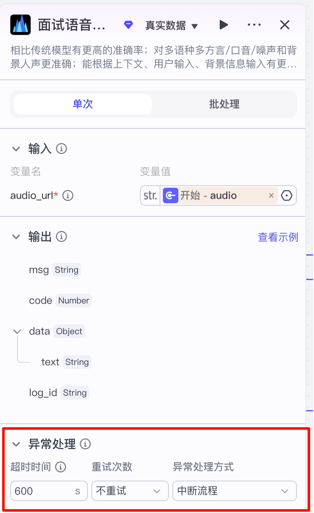
三、实现角色划分与概要提取¶
角色划分与概要提取阶段如下：
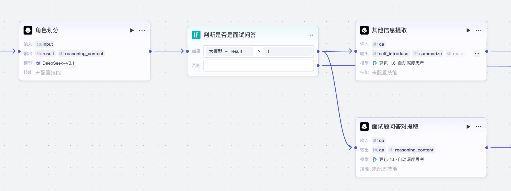
分为以下几个步骤：
- 角色划分：基于ASR识别的语音划分面试官和应试者
- 其他信息提取：基于角色划分总结面试的基本内容， 提取自我介绍部分
- 面试题问答对提取：纠结角色划分的结果，提取问题和对应的回答
1 角色划分¶
角色划分通过提示词结合ASR识别后的文字实现角色的划分：
-
输入内容到这里已经只剩下文本对话了，已经没有了语音中声纹、语气等各种信息，准确划分角色对推理能力有一定的要求，最好选择能力更强的模型
-
划分角色是基于这是一个面试录音内容，如果模型判读就按部是面试对话，直接输出空字符串，并结束整个流程的执行。
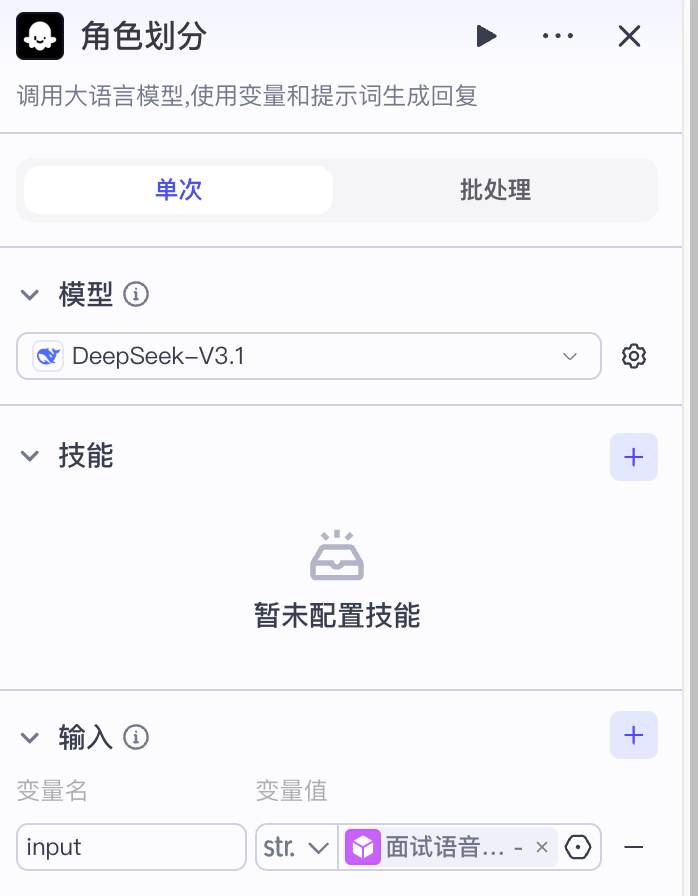
系统提示词：
你是一个语音转文字内容总结助手，专门负责处理大模型和算法工程师的面试内容的总结。 你能够根据给定的输入对话的进行内容的提取，你需要做的事情如下
1. 提取出来对话内容，以面试官和应试者进行区分，存放到字段{{result}}面试原文 ，按照原内容就行，不要省略，注意每次说话需要换行。
需要注意：
1. 以上内容以文本形式返回，如果中间有卡顿或者表现不好的情况，用[]括起来，在里面注明是什么异常情况
2. 在内容的开头注明是面试官还是应试者，以“面试官：内容” 换行 “应试者：内容”这样的方式组织文本
3. 如果你认为本次的内容不是面试的对话，直接输出空字符
用户提示词：
2 其他信息提取¶
提取两部分内容，输入为角色划分的结果：
- 个人简介部分：个人简介说了什么，从我是谁到最后，包括自我介绍中的项目部分
- 其他内容总结：主要问了哪些知识点，哪些技术问题，哪些项目问题，人事问题 ，有哪些不好回答的问题。各自占比怎么样，用户回答怎么样
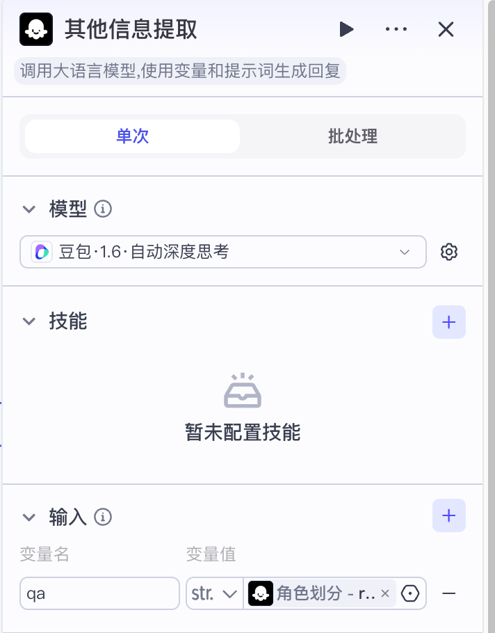
系统提示词：
你是一个面试过程概要总结助手，能够根据用户的面试内容总结出来概要信息，包括以下内容：
1. 个人简介部分：个人简介说了什么，从我是谁到最后，包括自我介绍中的项目部分，要求直接返回原文，以{self_introduce}变量返回。 如果是面试官问的介绍一下项目，不作为个人简介部分。
2. 其他内容总结：主要问了哪些知识点，哪些技术问题，哪些项目问题，人事问题 ，有哪些不好回答的问题。各自占比怎么样，用户回答怎么样，以{summarize}变量返回
用户提示词：
输出有两部分：
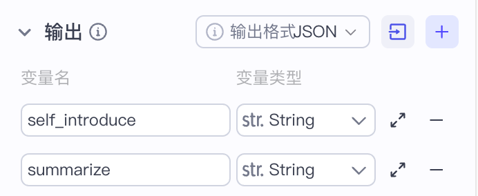
3 面试题问答对提取¶
面试题问答对提取节点的作用，是为了提取出问题和回答两部分内容两部分。我们在这个几点首先并把问题由一个大字符串拆成若干个问答对，每个元素是一个问答对。因为LLM节点只能转成Array[str]数据类型，Array[object]实测效果并不稳定， 所以在后面的过程中还得对每一个问答对（str格式）再进行拆分。
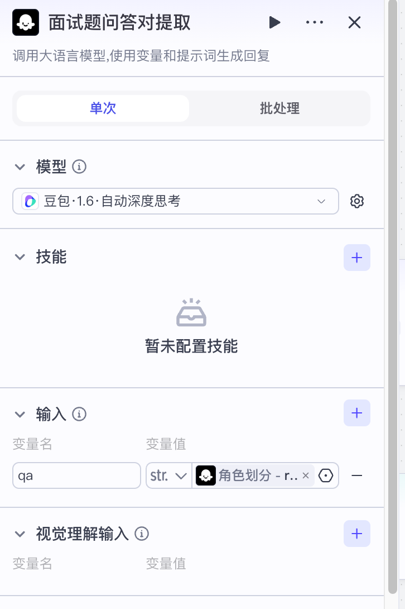
系统提示词：
你是一个面试内容提取助手，能够根据面试官和面试者的对话提取出问题和回答两部分内容，格式：“问题：” + 换行 + “回答”， 并以数组形式返回。
需要注意：
1. 每个问题和答案只保留问题和对应的回答，中间的一些无关的连接词什么的省略
2. 保留回答中的【停顿】等信息，以便后续评估
3. 不需要提取自我介绍和项目介绍
4. 问题需要结合上文进行补充，比如面试官先问了transformer的编码器是什么，然后又问了“解码器呢”， 这里需要把第二个问题“解码器呢”改写成 “transformer的解码器是什么”
用户提示词：
输出：
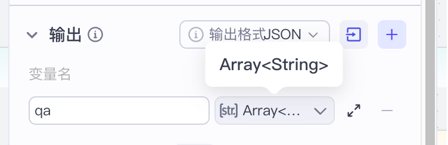
四、实现面试表现评估¶
面试表现评估整体图：
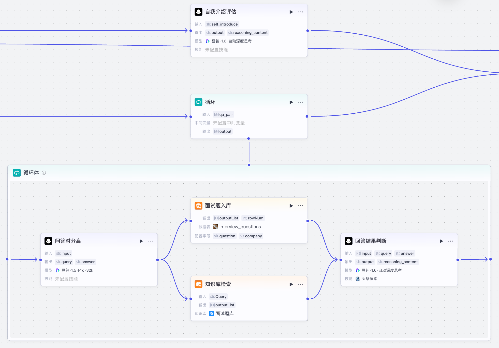
主要分为两部分：
- 自我介绍评估：基于知识库+prompt实现自我介绍的评估
- 面试回答结果评估： 基于RAG+prompt实现回答结果的判断，查询不到答案的通过互联网搜索获取答案；同时把提取出来的问题进行入库，以便统计使用
1 自我介绍评估¶
接收自我介绍的文本作为输入
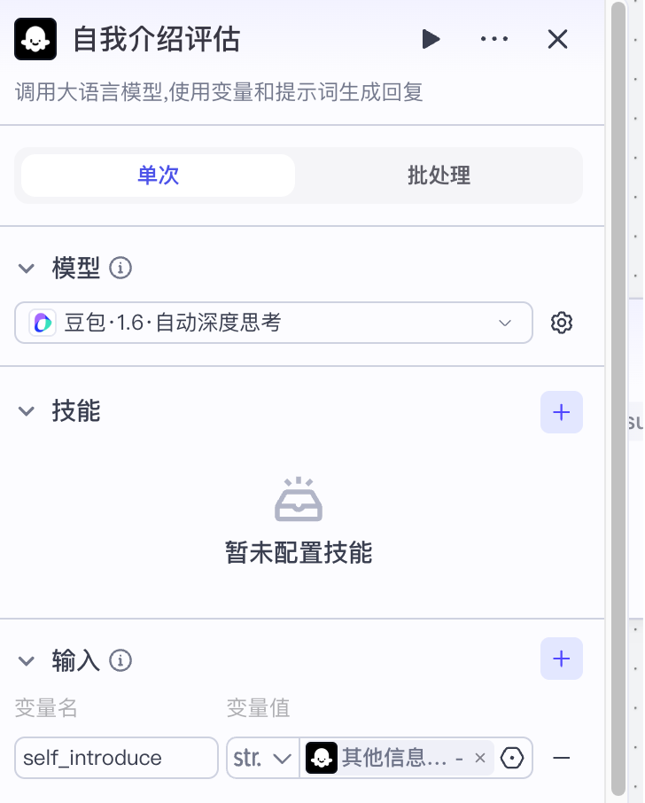
系统提示词如下：
你是一个大模型算法工程师的面试官，能够基于给出的规则对用户的自我介绍和项目介绍做一个评价，规则如下：
自我介绍：
1. 自我介绍应当包含姓名、学历、工作经历、做过哪些项目等，不可以有缺失
2. 工作经历的介绍主要介绍自己做过什么，担任过什么角色，突出自己的能力。篇幅长短要合适
3. 如果提到了自己的技能有哪些，不要直接说太多的技能点，比如擅长pytorch、擅长mysql这种，如果太多会比较啰嗦
4. 自我介绍中如果包含自己讲了项目经历，需要计算一下项目的篇幅。正确的方式应该是全部的自我介绍加起来3-5分钟，介绍一下最有价值的3个项目，并说一下3各项目都做了什么。不要直接一个项目说半天
5. 自我介绍中不要包含太多软素质的篇幅，靠说无法打动面试官，意义不大。需要以事实说服面试官
6. 以上违反了哪条，需要在评估结果中指出，并引用面试回答中的原文
用户提示词如下：
2 面试回答结果评估¶
对于面试回答结果的评估，我们这里使用循环结构进行处理：
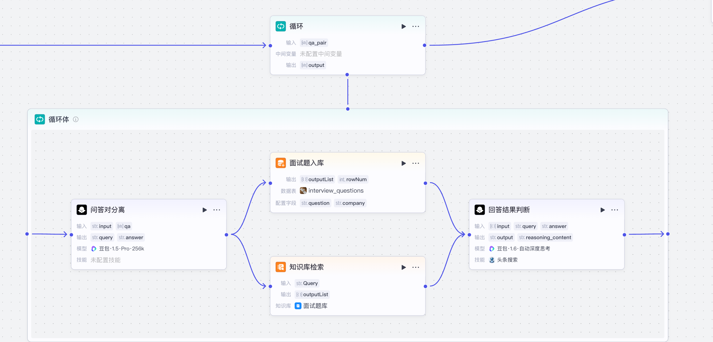
- 循环的内容就是上一步拆解出来的问答对数组：
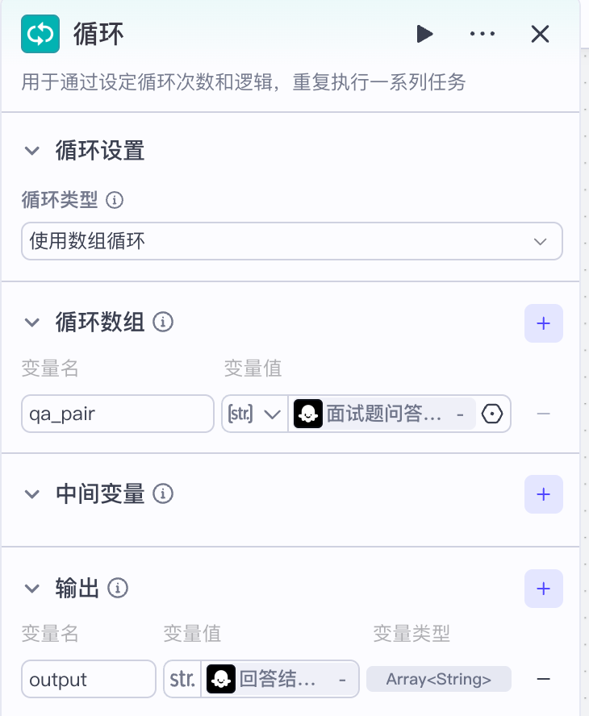
接下来我们进入循环内部，在循环内部，首先要做的事情就是把问题和回答进行分离，并对问题的内容做一些简单的处理。接收循环中的每个问答对作为处理对象，同时，接收qa作为面试中的全部问答内容，因为处理的内容比较多
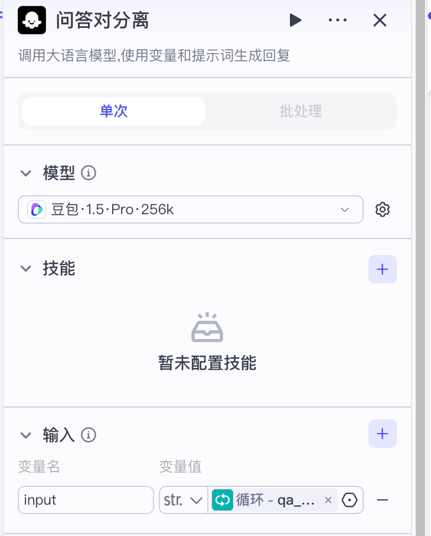
系统提示词：
你是一个数据格式处理专家，能够基于用输入的问题和回答拆分成两部分， 问题以{query}变量返回，答案以{answer}格式返回。
需要注意：
1. 答案保留原文即可
2. 问题要用来落库和查询，尽量书面化一些
用户提示词：
最后，我们把问答对进行输出：
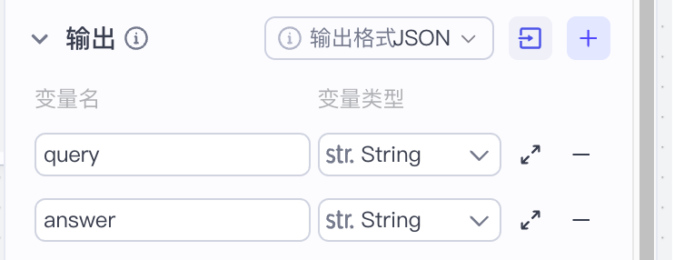
接下来，我们分两个链路执行：
- 知识库检索：把问题在面试题题库中进行检索，并获取到对应的答案
- 面试题入库：收集所有的面试题，并存入面试题题库，以便后续使用
首先是知识库检索，这里需要注意两个参数的设置：
- 最大召回数量：2个
- 最小匹配度：0.85或更高
这么设置的 原因是为了让检索出来的结果和问题更加接近，否则则会给后面的判断造成负面的影响。
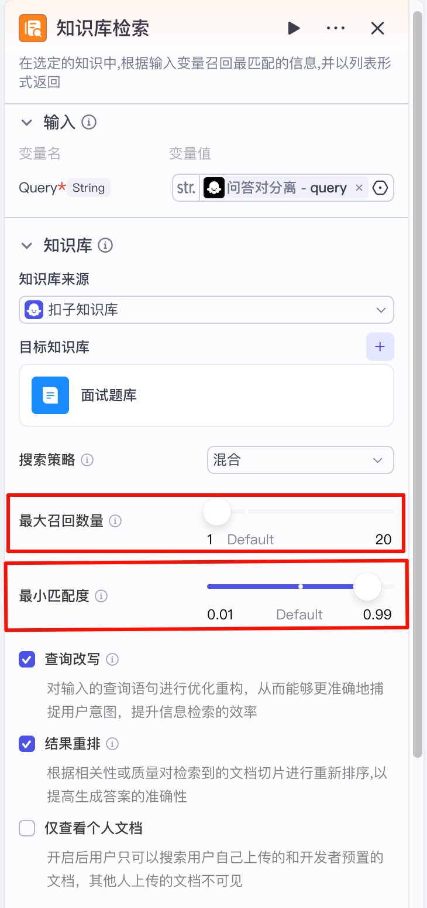
同时，我们把面试题进行入库，和知识库检索并行执行，这里我们写入两个字段：
- question: 面试问题
- company：公司，这里我们写unknow。比如后续迭代中，我们可以增加记录当前面试题属于哪个公司的逻辑
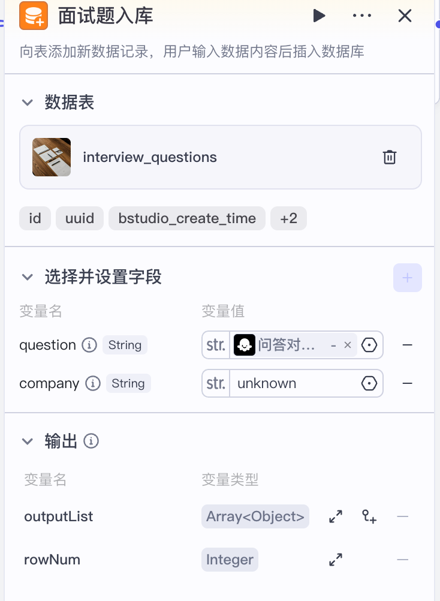
最后，对查询到的结果进行判断：
- 如果知识库中有对应的问题和答案，并且大模型可以作为参考的，基于知识库中的答案判断用户回答是否正确，以及和问题是否匹配
- 如果知识库查不到对应的内容，大模型通过查询互联网，基于互联网上的回答，验证和问题是否匹配
因为这里需要判断答案和用户的回答是否一致，对逻辑推理的要求比较高，我们使用深度思考模型。该部分的输入有3个：
- input：知识库检索出的结果
- query：问答对分离后的问题
- anwser：面试者的回答
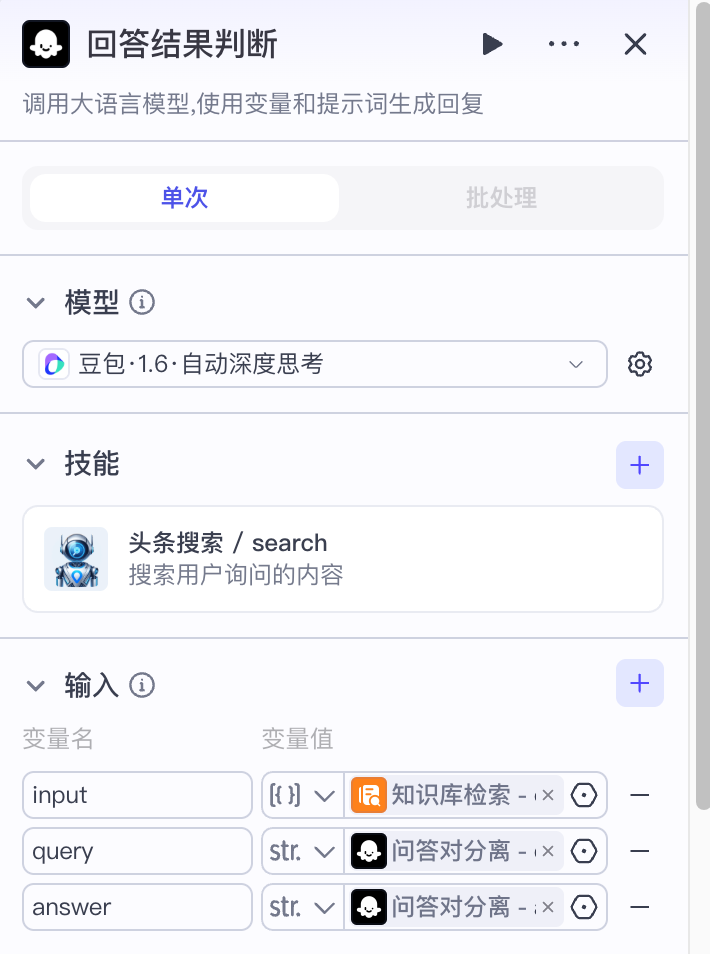
系统提示词:
你是一个大模型算法工程师的面试官，能够根据面试的问题、 用户的回答、 题目库中查询出来的结果，以及互联网上搜索到的答案对用户的问题进行综合的评估。
步骤如下：
1. 请根据知识库查询出来的结果先判断检查出来的是否是问题的答案，如果查询出来的内容和答案无关，则进行互联网查询；如果就是答案，请以这个答案为准
2. 对比问题和答案，判断用户回答的结果怎么样
需要注意：
1. 需要给本题的回答进行评价，ABCD 4个级别， D是完全不会，C是只能回答一小部分，或者卡壳太厉害，B是能够回答对大部分但是不够深入，A是回答的非常好甚至超越面试题库或者接近互联网上的答案
2. 回答的不好的问题，需要告诉用户正确答案
3. 回答复杂问题的方式需要易懂，言简意赅，先回答整体，再回答细节。 如果回答的不易懂或者逻辑比较乱，需要告诉面试者要培养更好的表达方式
4. 如果面试官问的是项目介绍（不是项目架构这类具体问题），要从项目的业务背景、项目架构、自己做了哪些、优化项表达，并参考3的判断条件当做一个复杂问题评判
5. 回答的问题如果和题目不太相干，或者说理解错了。需要指出面试者需要先理解问题再回答
用户提示词：
五、实现报告内容生成¶
报告内容生成节点接收自我介绍评估、面试表现评估两个部分的结果作为输入和整合，这个部分的目的主要是为了把面试整体的情况做一个整合，再输入给结束节点

报告内容生成仅需一个LLM节点即可完成，接收3个输入：
- summarize：面试整体描述
- self_introduce_result：自我介绍的评估结果
- qa_result：回答结果评估的结果，数组格式
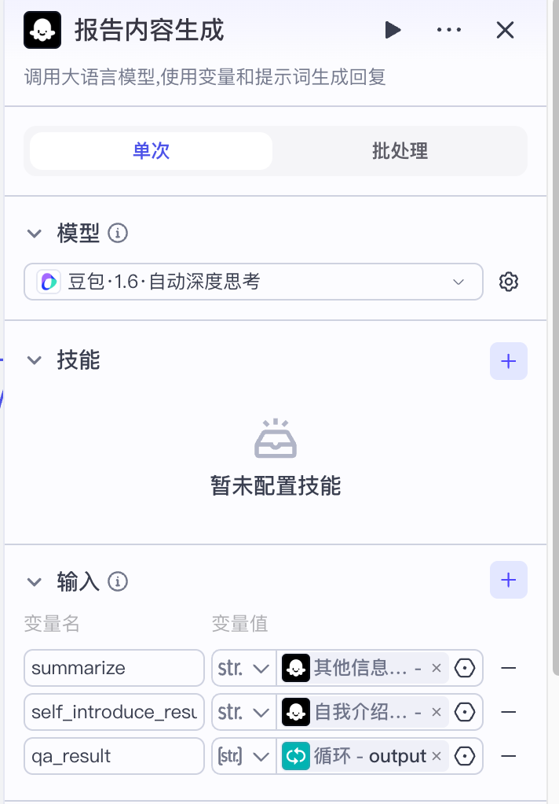
系统提示词：
你是一个面试助手，服务于大模型算法工程师的面试官。能够根据输入的面试整体概述、自我介绍内容评估、问答结果评估进行整合，需要注意，面试整体描述在前、然后是自我介绍评估、最后是问答结果评估。
需要注意：
1. 把问答结果的整体情况，比如问了多少个题，多少个回答不错，多少个没有回答上来，结合问题的难易程度，评估面试者的技术如何，如果回答不对的有一些，需要提醒面试者有针对性的复习。如果回答不对的比较多，提醒面试者需要投入更多的时间复习技术，并联系老师寻求帮助。这部分内容加到整体描述部分
2. 问答结果部分在整合时只保留回答的不好的部分，并在返回结果中说明哪些回答的不好，应该怎么回答更好。把评估结果中的原文直接返回就行
3. 如果问答结果中或者自我介绍评估结果中提到的表述方面的问题比较多， 需要在整体概述中进行强调，要求将面试者加强
六、工作流调试¶
工作流搭建好后，我们上传一份录音文件，并试运行工作流，最终节点输出如下：
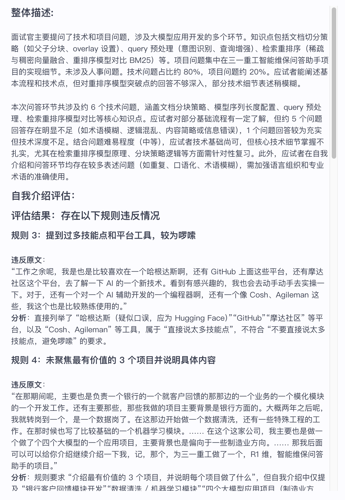
在调试的过程中，运行日志如下：
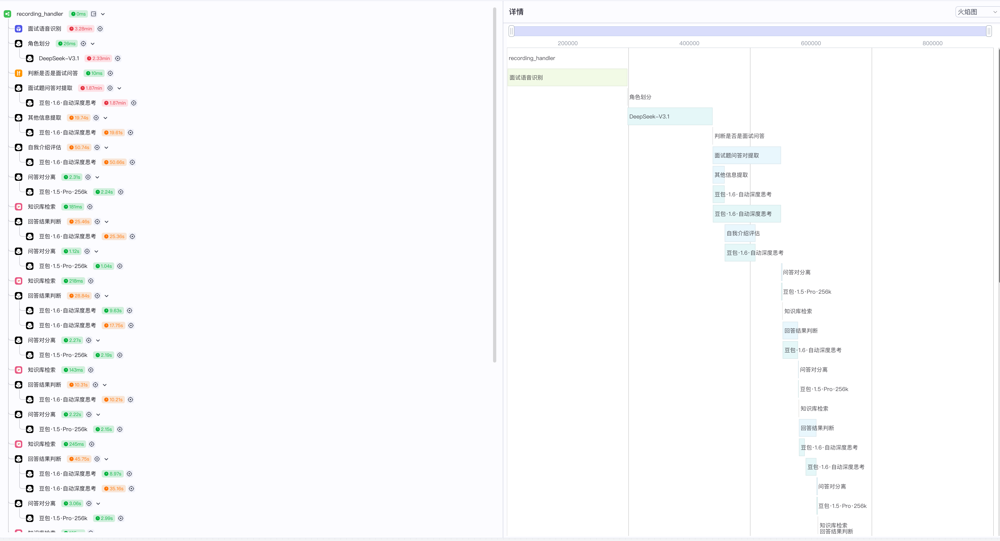
消耗的token数增多，同时，运行时长很明显比较长
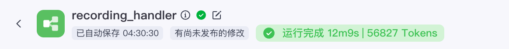